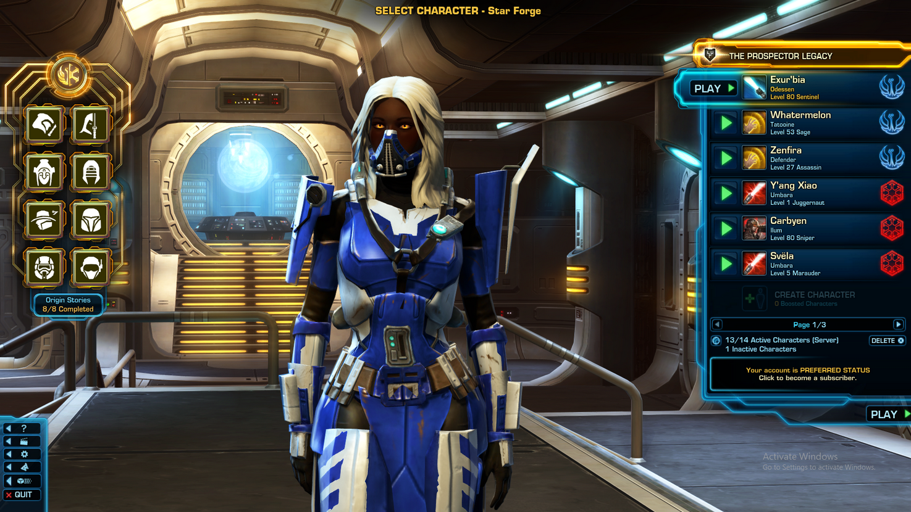

General Hannah Exi has spent her entire life dedicated to the defense and prosperity of the Republic of Saturn. Born into a prestigious military family, she displayed exceptional leadership qualities from a young age, earning her a place at the prestigious Saturn Military Academy.
Hannah's rise through the ranks was meteoric. She quickly proved herself on the battlefield, exhibiting not only strategic brilliance but also a deep sense of duty to her nation. She became known for her unyielding commitment to the Republic of Saturn's security and her unwavering belief in the righteousness of her cause
As a battle commander, Hannah has led her troops through numerous conflicts, always putting the welfare of her soldiers and her nation above all else. Her victories have been celebrated, and she is hailed as a national hero. However, her commitment to her duty has come at a cost.
Over the years, Hannah has been forced to make morally ambiguous decisions in the heat of battle. She has ordered devastating strikes on enemy positions, resulting in significant civilian casualties. She has sanctioned covert operations with questionable legality to protect the Saturn's interests. Each choice weighs heavily on her conscience, and the line between the greater good and moral compromise has blurred.
Hannah's internal struggle with her own morals has intensified as she's risen through the ranks. She questions the price of her victories, the lives lost, and the suffering caused by her decisions. She finds herself haunted by the faces of those affected by her choices, both enemy combatants and innocent civilians.
As the Republic faces new threats and escalating conflicts, General Hannah Exi finds herself at a crossroads. She must confront the moral complexities of her role as a battle commander and grapple with the choices she has made in the name of her nation. Will she continue to prioritize the security of Saturn at any cost, or will she find a way to reconcile her duty with her conscience, seeking a path that allows her to protect her nation without compromising her own sense of morality?